6306: Case Study 1
Megan Ball, Matt Farrow

Setup
# Load beers and clean column names
beers <- read_csv(here::here("data - raw", "Beers.csv"))## Parsed with column specification:
## cols(
## Name = col_character(),
## Beer_ID = col_double(),
## ABV = col_double(),
## IBU = col_double(),
## Brewery_id = col_double(),
## Style = col_character(),
## Ounces = col_double()
## )beers <- janitor::clean_names(beers)
# Load breweries and clean column names
breweries <- read_csv(here::here("data - raw", "Breweries.csv"))## Parsed with column specification:
## cols(
## Brew_ID = col_double(),
## Name = col_character(),
## City = col_character(),
## State = col_character()
## )breweries <- janitor::clean_names(breweries)
# Define "Budweiser Red"
bud_red <- "#C8102E"How many breweries are present in each state?
In addition to producing a table of the count of breweries in each state, we also created a map to visualize the distribution of breweries around the country.
# Count the breweries by state
breweries_by_st <- breweries %>%
count(state) %>%
rename(brewery_count = n,
st = state) %>%
mutate(state = tolower(state.name[match(st,state.abb)])) %>%
filter(!is.na(state)) %>%
select(state, brewery_count)
# Merge states map with brewery data
breweries_by_st_map <- left_join(map_data("state"), breweries_by_st, by = c("region" = "state"))
# Create the breweries by state map
ggplot(breweries_by_st_map, aes(long, lat, group = group)) +
geom_polygon(aes(fill = brewery_count), color = "white") +
scale_fill_viridis_c(option = "inferno") +
labs(title = "Breweries by State",
fill = "") +
coord_map() +
theme_void() +
theme(
panel.background = element_rect(fill = "#f3f3f2"), #F3F3F2 is the color of the PowerPoint slide backgroud for this chart
plot.background = element_rect(fill = "#f3f3f2", color = NA),
)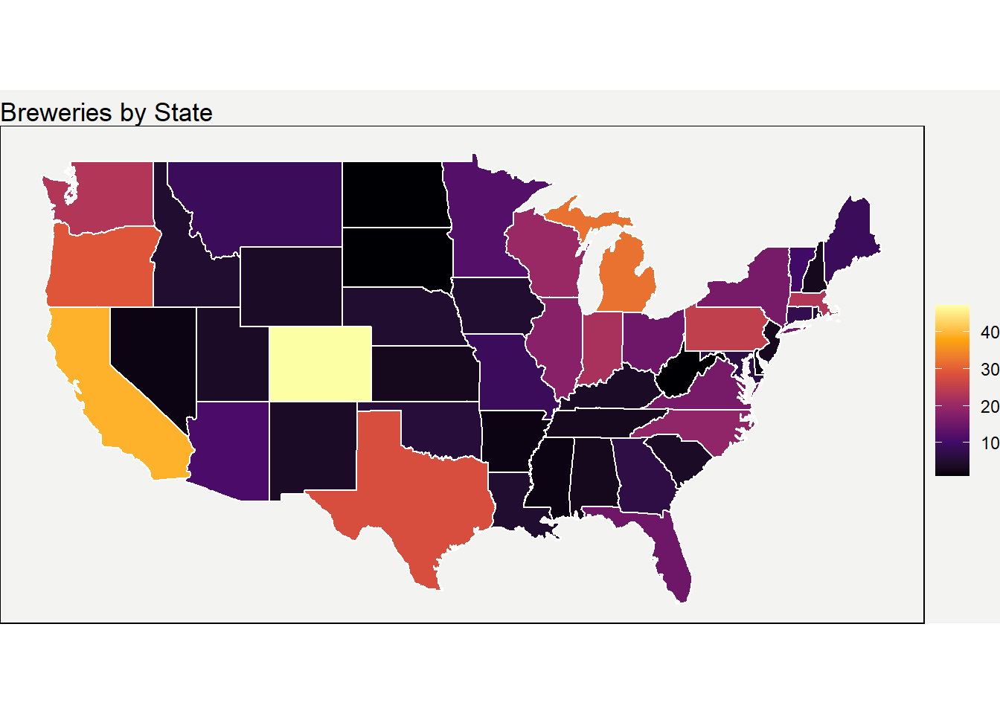
# Save a copy of the map to the images folder
# ggsave(here::here("images", "breweries by state.png"), dpi = "retina")
# Create a table of the number of breweries by state
# ⎼⎼⎼⎼⎼⎼⎼⎼⎼⎼⎼⎼⎼⎼⎼⎼⎼⎼⎼⎼⎼⎼⎼⎼⎼⎼⎼⎼⎼⎼⎼⎼⎼⎼⎼⎼⎼⎼⎼⎼⎼⎼⎼⎼⎼⎼⎼⎼⎼⎼⎼⎼⎼⎼⎼⎼⎼⎼⎼⎼⎼⎼⎼⎼⎼⎼⎼⎼⎼⎼⎼⎼⎼⎼⎼⎼⎼
# Because there isn't a clean way to wrap columns using the gt() function, we've
# split the data into three separate data sets then bound the columns of each
# set back together to simulate three columns of data.
by_st1 <- breweries_by_st %>%
arrange(desc(brewery_count)) %>%
slice(1:17)
by_st2 <- breweries_by_st %>%
arrange(desc(brewery_count)) %>%
slice(18:34)
by_st3 <- breweries_by_st %>%
arrange(desc(brewery_count)) %>%
slice(35:51) %>%
add_row()
bind_cols(by_st1,
by_st2,
by_st3) %>%
gt() %>%
tab_header(title = "How Many Breweries are Present in Each State?") %>%
cols_label(`state...1` = "State",
`brewery_count...2` = "Count",
`state...3` = "State",
`brewery_count...4` = "Count",
`state...5` = "State",
`brewery_count...6` = "Count") %>%
{.}## New names:
## * state -> state...1
## * brewery_count -> brewery_count...2
## * state -> state...3
## * brewery_count -> brewery_count...4
## * state -> state...5
## * ...| How Many Breweries are Present in Each State? | |||||
|---|---|---|---|---|---|
| State | Count | State | Count | State | Count |
| colorado | 47 | arizona | 11 | new mexico | 4 |
| california | 39 | vermont | 10 | south carolina | 4 |
| michigan | 32 | maine | 9 | utah | 4 |
| oregon | 29 | missouri | 9 | wyoming | 4 |
| texas | 28 | montana | 9 | alabama | 3 |
| pennsylvania | 25 | connecticut | 8 | kansas | 3 |
| massachusetts | 23 | alaska | 7 | new hampshire | 3 |
| washington | 23 | georgia | 7 | new jersey | 3 |
| indiana | 22 | maryland | 7 | tennessee | 3 |
| wisconsin | 20 | oklahoma | 6 | arkansas | 2 |
| north carolina | 19 | iowa | 5 | delaware | 2 |
| illinois | 18 | idaho | 5 | mississippi | 2 |
| new york | 16 | louisiana | 5 | nevada | 2 |
| virginia | 16 | nebraska | 5 | north dakota | 1 |
| florida | 15 | rhode island | 5 | south dakota | 1 |
| ohio | 15 | hawaii | 4 | west virginia | 1 |
| minnesota | 12 | kentucky | 4 | NA | NA |
# Create a table of the top 10 states for breweries
breweries %>%
count(state) %>%
arrange(desc(n)) %>%
slice(1:10) %>%
gt() %>%
tab_header(title = "Top 10 States") %>%
cols_label(state = "State",
n = "Breweries") | Top 10 States | |
|---|---|
| State | Breweries |
| CO | 47 |
| CA | 39 |
| MI | 32 |
| OR | 29 |
| TX | 28 |
| PA | 25 |
| MA | 23 |
| WA | 23 |
| IN | 22 |
| WI | 20 |
# Create a table of the bottom 10 states for breweries
breweries %>%
count(state) %>%
arrange(n) %>%
slice(1:10) %>%
gt() %>%
tab_header(title = "Bottom 10 States") %>%
cols_label(state = "State",
n = "Breweries") | Bottom 10 States | |
|---|---|
| State | Breweries |
| DC | 1 |
| ND | 1 |
| SD | 1 |
| WV | 1 |
| AR | 2 |
| DE | 2 |
| MS | 2 |
| NV | 2 |
| AL | 3 |
| KS | 3 |
The top three states are Colorado (47), California (39), and Michigan (32). The bottom three states are North Dakota (1), South Dakota (1), and West Virginia (1).
Merge Beer & Breweries Data
After taking a look at the brewery data, we next merged it with the beer data in order to start our analysis of alcohol by volume (ABV) and international bitterness units (IBU). We’ll take a look at the data after we merged it to make sure everything looks ok.
# Merge the beer and brewery data sets
beer_brew <- left_join(beers, breweries, by = c("brewery_id" = "brew_id"))
# Clean up column names post-merge
beer_brew <- beer_brew %>%
rename(beer_name = name.x,
brewery_name = name.y)
# Look at the first six observations
beer_brew %>%
slice_head(n = 6) %>%
gt() %>%
tab_header(title = "First Six Observations")| First Six Observations | |||||||||
|---|---|---|---|---|---|---|---|---|---|
| beer_name | beer_id | abv | ibu | brewery_id | style | ounces | brewery_name | city | state |
| Pub Beer | 1436 | 0.050 | NA | 409 | American Pale Lager | 12 | 10 Barrel Brewing Company | Bend | OR |
| Devil's Cup | 2265 | 0.066 | NA | 178 | American Pale Ale (APA) | 12 | 18th Street Brewery | Gary | IN |
| Rise of the Phoenix | 2264 | 0.071 | NA | 178 | American IPA | 12 | 18th Street Brewery | Gary | IN |
| Sinister | 2263 | 0.090 | NA | 178 | American Double / Imperial IPA | 12 | 18th Street Brewery | Gary | IN |
| Sex and Candy | 2262 | 0.075 | NA | 178 | American IPA | 12 | 18th Street Brewery | Gary | IN |
| Black Exodus | 2261 | 0.077 | NA | 178 | Oatmeal Stout | 12 | 18th Street Brewery | Gary | IN |
# Look at the last six observations
beer_brew %>%
slice_tail(n = 6) %>%
gt() %>%
tab_header(title = "Last Six Observations")| Last Six Observations | |||||||||
|---|---|---|---|---|---|---|---|---|---|
| beer_name | beer_id | abv | ibu | brewery_id | style | ounces | brewery_name | city | state |
| Rocky Mountain Oyster Stout | 1035 | 0.075 | NA | 425 | American Stout | 12 | Wynkoop Brewing Company | Denver | CO |
| Belgorado | 928 | 0.067 | 45 | 425 | Belgian IPA | 12 | Wynkoop Brewing Company | Denver | CO |
| Rail Yard Ale | 807 | 0.052 | NA | 425 | American Amber / Red Ale | 12 | Wynkoop Brewing Company | Denver | CO |
| B3K Black Lager | 620 | 0.055 | NA | 425 | Schwarzbier | 12 | Wynkoop Brewing Company | Denver | CO |
| Silverback Pale Ale | 145 | 0.055 | 40 | 425 | American Pale Ale (APA) | 12 | Wynkoop Brewing Company | Denver | CO |
| Rail Yard Ale (2009) | 84 | 0.052 | NA | 425 | American Amber / Red Ale | 12 | Wynkoop Brewing Company | Denver | CO |
Address Missing Values
Now that the data was successfully merged together, we began the process of investigating and addressing the missing values in the data set. Unfortunately there are a number of missing values, particularly when it comes to ABV and IBU. After examining the histograms for those two variables, we made two decisions. The first was to exclude cider and mead from the analysis because they are not beer. The second was to impute the mean ABV and IBU value by beer style for all missing values of those variables. We felt that offered the best balance between not losing observations and staying true to the beer’s style. Our final task for this question was to simply remove any remaining observations with missing values.
# How many missing values do we currently have in the data?
colSums(is.na(beer_brew))## beer_name beer_id abv ibu brewery_id style ounces brewery_name
## 0 0 62 1005 0 5 0 0
## city state
## 0 0# What is the distribution of ABV and IBU before imputation?
hist(beer_brew$abv)hist(beer_brew$ibu)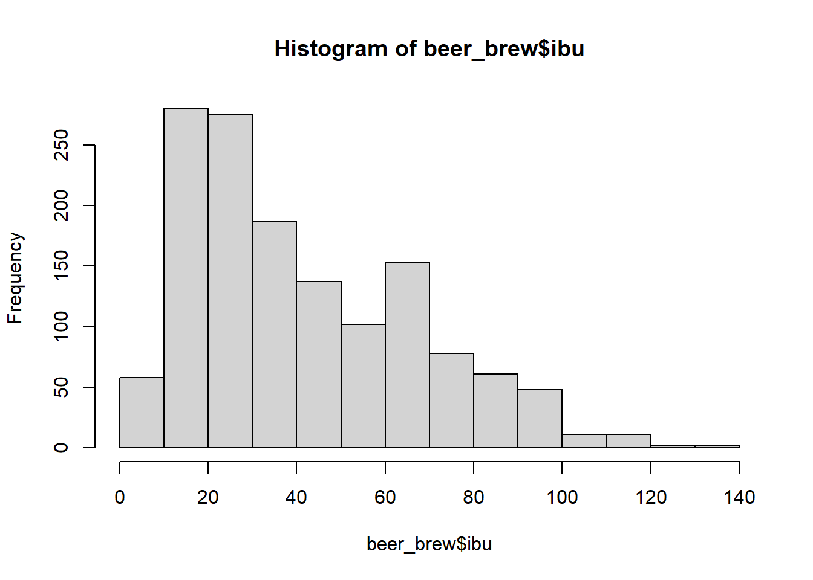
# Check which styles are NA for ABV and IBU
filter(beer_brew, ibu == "NaN")## # A tibble: 0 x 10
## # ... with 10 variables: beer_name <chr>, beer_id <dbl>, abv <dbl>, ibu <dbl>, brewery_id <dbl>,
## # style <chr>, ounces <dbl>, brewery_name <chr>, city <chr>, state <chr>filter(beer_brew, abv == "NaN")## # A tibble: 0 x 10
## # ... with 10 variables: beer_name <chr>, beer_id <dbl>, abv <dbl>, ibu <dbl>, brewery_id <dbl>,
## # style <chr>, ounces <dbl>, brewery_name <chr>, city <chr>, state <chr># Get rid of cider and mead because they are not beer
beer_brew <- beer_brew %>%
filter((style != "Cider") & (style != "Mead"))
# Create a function to impute the mean
impute_mean <- function(x) {
ind_na <- is.na(x)
x[ind_na] <- mean(x[!ind_na])
as.numeric(x)
}
# Calculate mean IBU & ABV
beer_brew <- beer_brew %>%
group_by(style) %>%
mutate_at(vars(ibu, abv), impute_mean) %>%
ungroup()
# Distribution of ABV and IBU after imputation
hist(beer_brew$abv)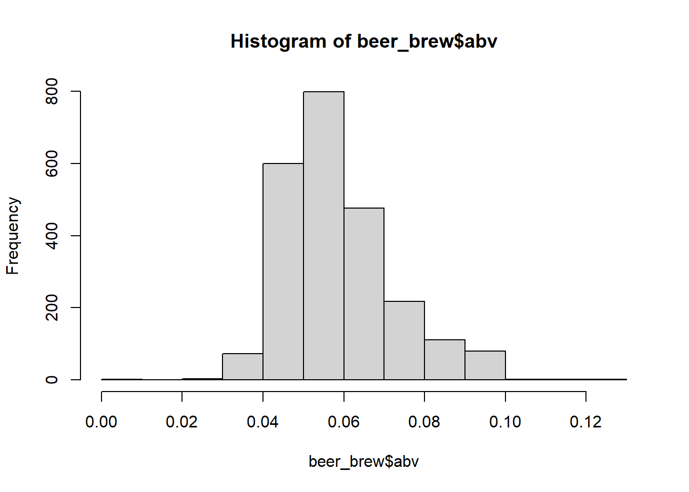
hist(beer_brew$ibu)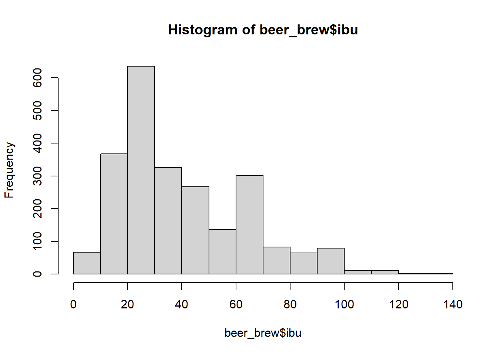
# Check for any remaining NA
colSums(is.na(beer_brew))## beer_name beer_id abv ibu brewery_id style ounces brewery_name
## 0 0 0 10 0 0 0 0
## city state
## 0 0# Still a stubborn 10 rows that are NA - this is because these styles don't have
# IBU. Remove these rows
beer_brew <- beer_brew %>%
drop_na(ibu)
# Check for any remaining NA
colSums(is.na(beer_brew))## beer_name beer_id abv ibu brewery_id style ounces brewery_name
## 0 0 0 0 0 0 0 0
## city state
## 0 0Median ABV & IBU
Using our merged data, we created a new data set to investigate the distribution of median ABV and IBU by state. For this question we made the decision to use histograms that were arranged in descending order from largest median to the smallest.
# Median ABV & IBU
median_abv_ibu <- beer_brew %>%
filter(state != "DC") %>%
group_by(state) %>%
summarise(median_abv = median(abv, na.rm = TRUE),
median_ibu = median(ibu, na.rm = TRUE)) %>%
rename(st = state) %>%
mutate(state = tolower(state.name[match(st,state.abb)]),
median_abv_per = median_abv * 100) %>%
ungroup() %>%
pivot_longer(cols = c(3,5), names_to = "measure")## `summarise()` ungrouping output (override with `.groups` argument)# ABV Histogram
median_abv_ibu %>%
filter(measure == "median_abv_per") %>%
ggplot(aes(x = reorder(state, -value), y = value)) +
geom_bar(stat = "identity", fill = "darkolivegreen4") +
labs(title ="Median Alcohol by Volume for Each State",
x = "State",
y = "ABV (%)") +
scale_x_discrete(guide = guide_axis(angle = 90)) +
theme_minimal() +
NULL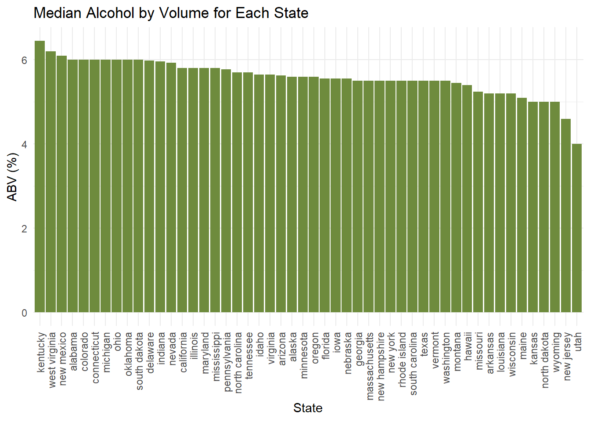
# Save the ABV histogram to the images folder
# ggsave(
# here::here("images", "median abv by state.png"),
# dpi = "retina",
# width = 10,
# height = 3,
# units = "in"
# )
# IBU Histogram
median_abv_ibu %>%
filter(measure == "median_ibu") %>%
ggplot(aes(x = reorder(state, -value), y = value)) +
geom_bar(stat = "identity", fill = "goldenrod1") +
labs(title ="Median IBU for Each State",
x = "State",
y = "IBU") +
scale_x_discrete(guide = guide_axis(angle = 90)) +
theme_minimal() +
NULL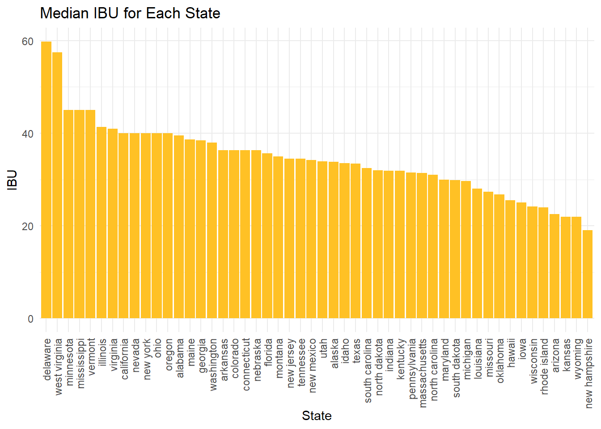
# Save the ABV histogram to the images folder
# ggsave(
# here::here("images", "median ibu by state.png"),
# dpi = "retina",
# width = 10,
# height = 3,
# units = "in"
# )Delaware and West Virginia have the highest median IBU, but only include two beers per state. After that, Minnesota has the highest median IBU at 45 and includes a total of 12 breweries.
Kentucky has the highest median ABV at 6.5%.
Mapping the Data Instead
While the histograms offer a quick look at the median distribution and an assessment of which state has the highest and lowest median values, we also thought it would be interesting to once again map the data to see if there were regional trends that might be hiding in the data.
# Re-make the median_abv_ibu data set without the pivot longer and highlights
median_abv_ibu <- beer_brew %>%
filter(state != "DC") %>%
group_by(state) %>%
summarise(median_abv = median(abv, na.rm = TRUE),
median_ibu = median(ibu, na.rm = TRUE)) %>%
rename(st = state) %>%
mutate(state = tolower(state.name[match(st,state.abb)]),
median_abv_per = median_abv * 100)## `summarise()` ungrouping output (override with `.groups` argument)# Merge the state and beer data together
median_map <- left_join(map_data("state"), median_abv_ibu, by = c("region" = "state"))
# Use the map function to get the polygon data, then find the centroids
state_poly <- maps::map("state", plot=FALSE, fill = TRUE)
# Define state centroids to plot values on states
state_centroids <- maps:::apply.polygon(state_poly, maps:::centroid.polygon)
# Create a data frame for graphing out of the centroids of each polygon
# with a non-missing name
state_centroids <- state_centroids[!is.na(names(state_centroids))]
centroid_array <- Reduce(rbind, state_centroids)
dimnames(centroid_array) <-
list(gsub("[^,]*,", "", names(state_centroids)),
c("long", "lat"))
label_df <- as.data.frame(centroid_array)
label_df$state <- rownames(label_df)
# Remove extra names
label_df <- label_df[-c(20, 22, 34, 36, 37, 38, 40, 53, 54, 56, 57, 58, 59), ]
# Remove subregion
label_df$state <- str_extract(label_df$state, "[a-z ]+")
# Join label data with median_abv_ibu value
median_map_label <- left_join(label_df, median_abv_ibu, by = c("state" = "state"))
# Create a map of median IBU by state with value
ggplot(median_map, aes(long, lat, group = group)) +
geom_polygon(aes(fill = median_ibu), color = "white") +
geom_text(data = median_map_label,
aes(label = round(median_ibu, digits = 1), group = state),
size = 3) +
scale_fill_viridis_c() +
labs(title = "Median IBU by State",
fill = "Median IBU") +
guides(fill = FALSE) +
coord_map() +
theme_void()## Warning: Removed 1 rows containing missing values (geom_text).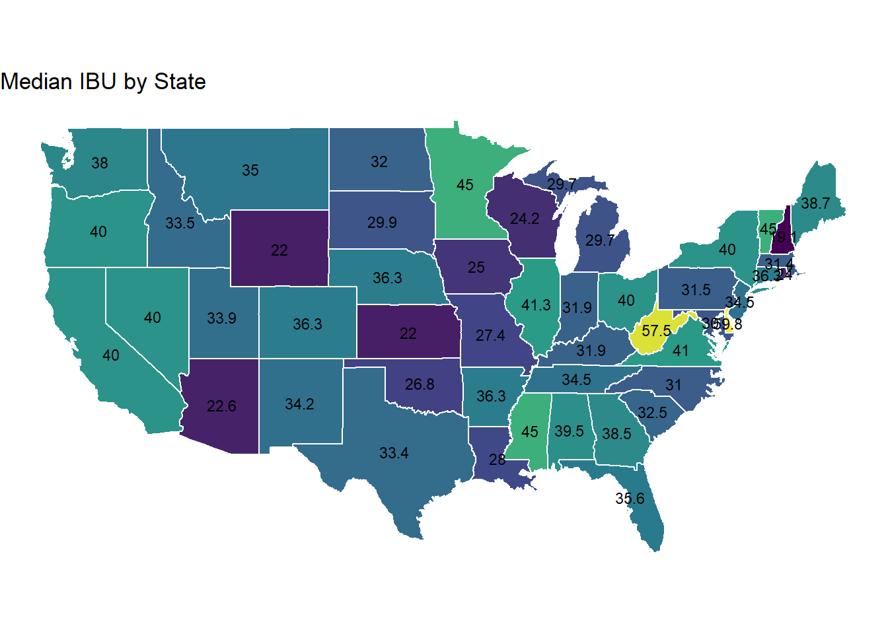
# Save the map to the images folder
# ggsave(here::here("images", "median ibu by state map.png"), dpi = "retina")
# Create a map of median ABV by state with value
ggplot(median_map, aes(long, lat, group = group)) +
geom_polygon(aes(fill = median_abv), color = "white") +
geom_text(data = median_map_label,
aes(label = round(median_abv_per, digits = 1), group =
state),
size = 2.75) +
scale_fill_viridis_c() +
labs(title = "Median ABV by State",
fill = "Median ABV (%)") +
guides(fill = FALSE) +
coord_map() +
theme_void()## Warning: Removed 1 rows containing missing values (geom_text).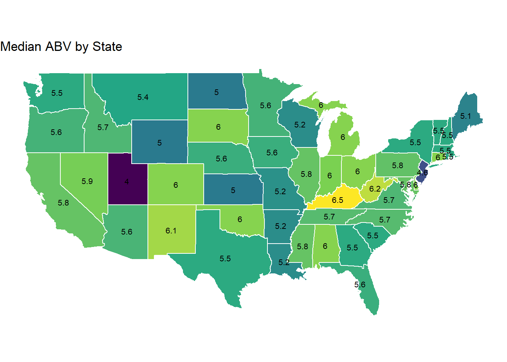
# Save the map to the images folder
# ggsave(here::here("images", "median abv by state map.png"), dpi = "retina")
#which are the high IBU beers in DE, WV
beer_brew %>%
filter(state == "DE" | state == "WV")## # A tibble: 4 x 10
## beer_name beer_id abv ibu brewery_id style ounces brewery_name city state
## <chr> <dbl> <dbl> <dbl> <dbl> <chr> <dbl> <chr> <chr> <chr>
## 1 Wild Trail Pa~ 2314 0.057 44 157 American Pale~ 12 Greenbrier Valley Brew~ Lewisb~ WV
## 2 Mothman Black~ 2313 0.067 71 157 American Blac~ 12 Greenbrier Valley Brew~ Lewisb~ WV
## 3 Appreciation ~ 1784 0.0645 67.6 317 American IPA 16 Iron Hill Brewery & Re~ Wilmin~ DE
## 4 Greenville Pa~ 433 0.055 52 540 American Pale~ 12 Twin Lakes Brewing Com~ Greenv~ DE#which are the low & high ABV beers in UT, WV
beer_brew %>%
filter(state == "UT" | state == "WV")## # A tibble: 28 x 10
## beer_name beer_id abv ibu brewery_id style ounces brewery_name city state
## <chr> <dbl> <dbl> <dbl> <dbl> <chr> <dbl> <chr> <chr> <chr>
## 1 Bohemian Export~ 1607 0.06 23.8 365 Dortmunder / Ex~ 12 Bohemian Brewery Midva~ UT
## 2 Altus Bohemes A~ 1597 0.053 34.1 365 Altbier 12 Bohemian Brewery Midva~ UT
## 3 Cherny Bock 344 0.04 31 365 Schwarzbier 12 Bohemian Brewery Midva~ UT
## 4 Czech Pilsner 89 0.05 33.8 365 Czech Pilsener 12 Bohemian Brewery Midva~ UT
## 5 Viennese Lager 88 0.05 24.4 365 Vienna Lager 12 Bohemian Brewery Midva~ UT
## 6 Wild Trail Pale~ 2314 0.057 44 157 American Pale A~ 12 Greenbrier Valley B~ Lewis~ WV
## 7 Mothman Black I~ 2313 0.067 71 157 American Black ~ 12 Greenbrier Valley B~ Lewis~ WV
## 8 Squeaky Bike Nu~ 1476 0.04 29.9 400 American Brown ~ 16 Moab Brewery Moab UT
## 9 Dead Horse Amber 902 0.04 20.7 400 American Pale W~ 16 Moab Brewery Moab UT
## 10 Rocket Bike Ame~ 645 0.04 41 400 California Comm~ 16 Moab Brewery Moab UT
## # ... with 18 more rowsMax ABV & IBU
To determine which beer had the highest ABV and IBU, respectively, we arranged the data set in descending order by the desired variable and kept only the top record. The state with the highest ABV was Colorado and the state with the highest IBU was Oregon.
# Highest ABV
beer_brew %>%
arrange(desc(abv)) %>%
filter(row_number() == 1)## # A tibble: 1 x 10
## beer_name beer_id abv ibu brewery_id style ounces brewery_name city state
## <chr> <dbl> <dbl> <dbl> <dbl> <chr> <dbl> <chr> <chr> <chr>
## 1 Lee Hill Series Vol. 5 - B~ 2565 0.128 24 52 Quadrupel~ 19.2 Upslope Brewing ~ Boul~ CO# Highest IBU
beer_brew %>%
arrange(desc(ibu)) %>%
filter(row_number() == 1)## # A tibble: 1 x 10
## beer_name beer_id abv ibu brewery_id style ounces brewery_name city state
## <chr> <dbl> <dbl> <dbl> <dbl> <chr> <dbl> <chr> <chr> <chr>
## 1 Bitter Bitch Impe~ 980 0.082 138 375 American Double /~ 12 Astoria Brewing ~ Astor~ ORABV Summary Stats and Distribution
Comment on the summary statistics and distribution of the ABV variable.
# Histogram of ABV
beer_brew %>%
ggplot(aes(x = abv)) +
geom_histogram(fill = bud_red, color = "gray90") +
scale_x_continuous(label = percent) +
ggtitle("Distribution of ABV") +
theme_minimal()## `stat_bin()` using `bins = 30`. Pick better value with `binwidth`.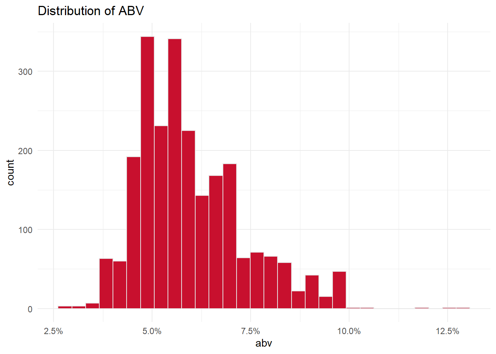
# Boxplot of ABV
beer_brew %>%
ggplot(aes(x = abv)) +
geom_boxplot(
outlier.colour = "red",
outlier.shape = 8,
outlier.size = 2,
fill = bud_red
) +
ggtitle("Distribution of ABV") +
theme_minimal()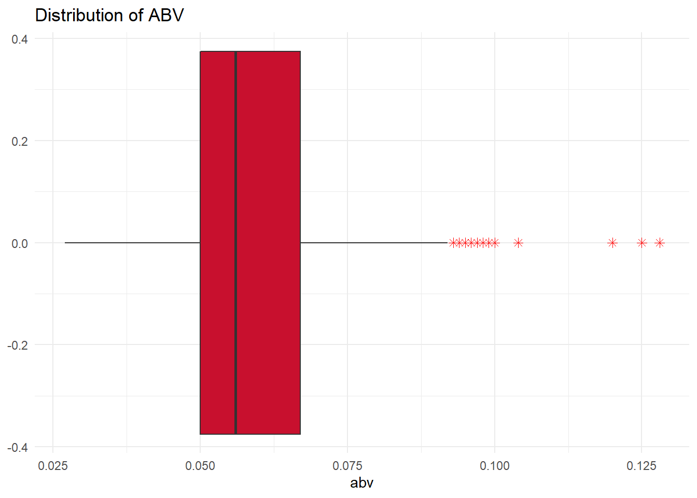
ABV ranges for the most part ranges between 2.5 to 10%. Most of the beers in our data set fall between 5 and 6%. There are three outliers at 12%, 12.5%, and 12.8%.
Is there a relationship between IBU and ABV?
Is there an apparent relationship between the bitterness of the beer and its alcoholic content? Draw a scatter plot. Make your best judgment of a relationship and EXPLAIN your answer.
# Create a scatter plot of ABV and IBU
beer_brew %>%
ggplot(aes(x = ibu, y = abv)) +
geom_jitter(alpha = 0.5, color = "#044389") +
geom_smooth(method = "lm") +
labs(title = "Is there a relationship Between ABV and IBU?",
x = "IBU",
y = "ABV") +
theme_minimal() +
theme(
panel.background = element_rect(fill = "#f3f3f2"),
plot.background = element_rect(fill = "#f3f3f2", color = NA),
)## `geom_smooth()` using formula 'y ~ x'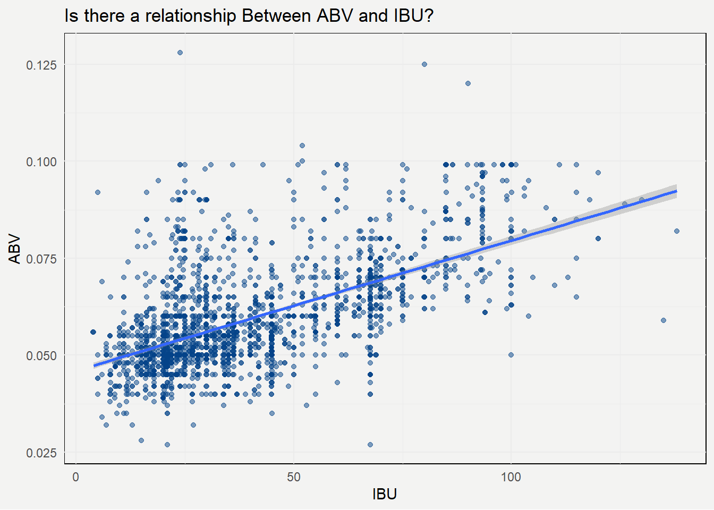
# Save the plot to the images folder
# ggsave(here::here("images", "abv and ibu relationship.png"), dpi = "retina")There does appear to be some quantifiable relationship between IBU and ABV. In general, as IBU increases, ABV appears to increase as well.
KNN
Budweiser would also like to investigate the difference with respect to IBU and ABV between IPAs (India Pale Ales) and other types of Ale (any beer with “Ale” in its name other than IPA). You decide to use KNN classification to investigate this relationship. Provide statistical evidence one way or the other. You can of course assume your audience is comfortable with percentages…KNN is very easy to understand conceptually.
In addition, while you have decided to use KNN to investigate this relationship (KNN is required) you may also feel free to supplement your response to this question with any other methods or techniques you have learned. Creativity and alternative solutions are always encouraged.
# Create data set of beers whose style contains only "IPA" or "Ale"
ipa_ale <- beer_brew %>%
mutate(style2 = as_factor(case_when(str_detect(style, "IPA") ~ "IPA",
str_detect(style, "ale") ~ "Ale"))) %>%
filter(!is.na(style2)) %>%
select(style2,
abv,
ibu)
# Create a new standardized data set for knn
ipa_ale$abv_std <- standardize(ipa_ale$abv, centerFun = mean, scaleFun = sd)
ipa_ale$ibu_std <- standardize(ipa_ale$ibu, centerFun = mean, scaleFun = sd)
# Set seed
set.seed(123)
# Find the optimum k for predicting beer type based on IBU and ABV
# ⎼⎼⎼⎼⎼⎼⎼⎼⎼⎼⎼⎼⎼⎼⎼⎼⎼⎼⎼⎼⎼⎼⎼⎼⎼⎼⎼⎼⎼⎼⎼⎼⎼⎼⎼⎼⎼⎼⎼⎼⎼⎼⎼⎼⎼⎼⎼⎼⎼⎼⎼⎼⎼⎼⎼⎼⎼⎼⎼⎼⎼⎼⎼⎼⎼⎼⎼⎼⎼⎼⎼⎼⎼⎼⎼⎼⎼
# Set the number of iterations
iterations <- 100
# Set the number of K's to test
numks <- 30
# Create a blank matrix for holding for loop results
masterAcc <- matrix(nrow = iterations, ncol = numks)
# For loop to split the data into training and testing sets, run a KNN on each
# value of K, create a confusion matrix and add the results to our previously
# created blank matrix
for (j in 1:iterations) {
trainInd <- sample(1:dim(ipa_ale)[1], round(0.75 * dim(ipa_ale)[1]))
train <- ipa_ale[trainInd, ]
test <- ipa_ale[-trainInd, ]
for (i in 1:numks)
{
classifications <-
knn(
train[, c(2, 3)],
test[, c(2, 3)],
train$style2,
prob = TRUE,
k = i,
use.all = TRUE
)
CM <- confusionMatrix(table(classifications, test$style2))
masterAcc[j, i] <- CM$overall[1]
}
}
# Calculate the column means
MeanAcc <- colMeans(masterAcc)
# Plot results
plot(seq(1, numks, 1), MeanAcc, type = "l")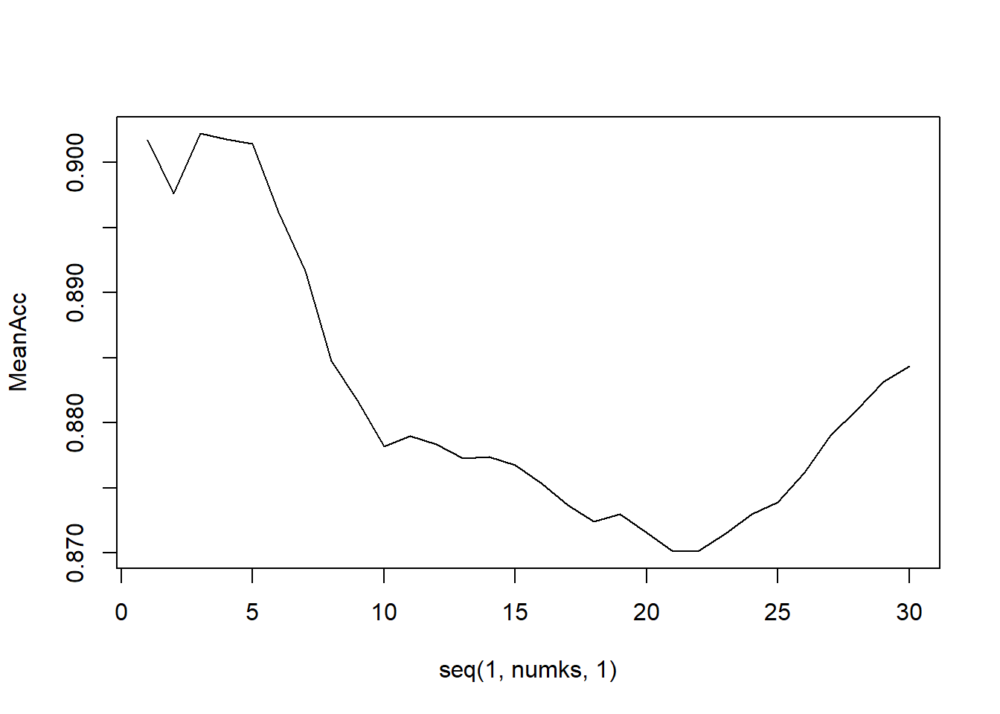
# Which K was most successful.
which.max(MeanAcc)## [1] 3Based on this look for 30 different k’s, we see the optimum accuracy is at k = 3.
# Run the KNN model with our optimum k
trainInd <- sample(1:dim(ipa_ale)[1], round(0.75 * dim(ipa_ale)[1]))
train <- ipa_ale[trainInd,]
test <- ipa_ale[-trainInd,]
knn_model <- knn(train[, c(2, 3)], test[, c(2, 3)], train$style2, k = 3)
CM <- confusionMatrix(knn_model, test$style2)
CM## Confusion Matrix and Statistics
##
## Reference
## Prediction Ale IPA
## Ale 107 18
## IPA 9 117
##
## Accuracy : 0.8924
## 95% CI : (0.8474, 0.9279)
## No Information Rate : 0.5378
## P-Value [Acc > NIR] : <2e-16
##
## Kappa : 0.7848
##
## Mcnemar's Test P-Value : 0.1237
##
## Sensitivity : 0.9224
## Specificity : 0.8667
## Pos Pred Value : 0.8560
## Neg Pred Value : 0.9286
## Prevalence : 0.4622
## Detection Rate : 0.4263
## Detection Prevalence : 0.4980
## Balanced Accuracy : 0.8945
##
## 'Positive' Class : Ale
## Knock Their Socks Off
As we explored IBU, we noticed that the higher median IBU values tended to fall around the coasts and major metropolitan areas. That got us thinking about the relative dearth of hoppy, higher-IBU beer across much of the middle of the country and the opportunity that presents you with at Budweiser. Your brand power, trusted reputation for quality, and your distribution pipeline have placed you in an ideal position to beginn capitalizing on the popularity that higher IBU beers have begun to enjoy.
explore <- beer_brew %>%
mutate(style2 = as_factor(case_when(str_detect(style, "IPA") ~ "IPA",
str_detect(style, "ale") ~ "Ale"))) %>%
filter(style2 == "IPA") %>%
count(state) %>%
rename(st = state,
ipas = n) %>%
mutate(region = tolower(state.name[match(st,state.abb)]))
explore <- left_join(map_data("state"), explore)## Joining, by = "region"explore$ipas[is.na(explore$ipas)] <- 0
explore %>%
mutate(ipa_potential = if_else(ipas < 10, "High", "Low")) %>%
ggplot(aes(long, lat, group = group)) +
geom_polygon(aes(fill = ipa_potential), color = "gray30") +
scale_fill_manual(values = c("#ffdf00", alpha("gray90", 0.5))) +
labs(title = "Middle America Offers IPA Market",
subtitle = "few craft brew selections present an untapped market",
fill = "Potential") +
coord_map() +
theme_void() #+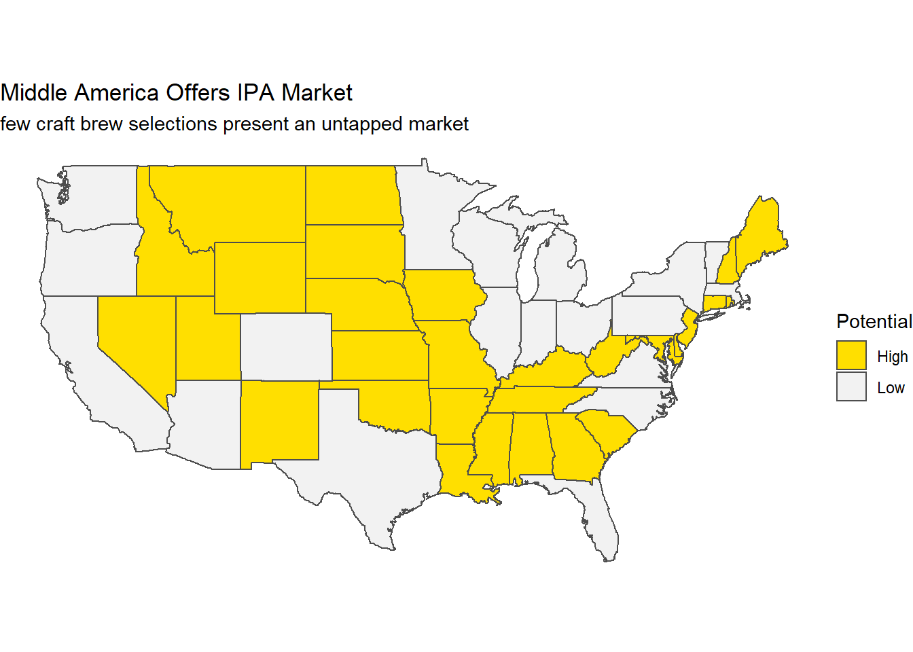
theme(
panel.background = element_rect(fill = "#f3f3f2"),
# bg of the panel
plot.background = element_rect(fill = "#f3f3f2", color = NA),
# bg of the plot
legend.position = "bottom")## List of 3
## $ legend.position : chr "bottom"
## $ panel.background:List of 5
## ..$ fill : chr "#f3f3f2"
## ..$ colour : NULL
## ..$ size : NULL
## ..$ linetype : NULL
## ..$ inherit.blank: logi FALSE
## ..- attr(*, "class")= chr [1:2] "element_rect" "element"
## $ plot.background :List of 5
## ..$ fill : chr "#f3f3f2"
## ..$ colour : logi NA
## ..$ size : NULL
## ..$ linetype : NULL
## ..$ inherit.blank: logi FALSE
## ..- attr(*, "class")= chr [1:2] "element_rect" "element"
## - attr(*, "class")= chr [1:2] "theme" "gg"
## - attr(*, "complete")= logi FALSE
## - attr(*, "validate")= logi TRUE# ggsave(here::here("images", "ipa potential.png"), dpi = "retina")Additional Exploration
The following are additional explorations that we considered for the questions in this analysis. We opted to include it to show our thought process as well as provide ideas for future exploration.
# Additional EDA with size and ABV
beer_brew %>%
ggplot(aes(x = ounces, y = abv)) +
geom_jitter(alpha = 0.5) +
geom_smooth(method = "lm") +
labs(
title = "Is there a relationship Between ABV and size?",
x = "Ounces",
y = "ABV"
) +
theme_minimal()## `geom_smooth()` using formula 'y ~ x'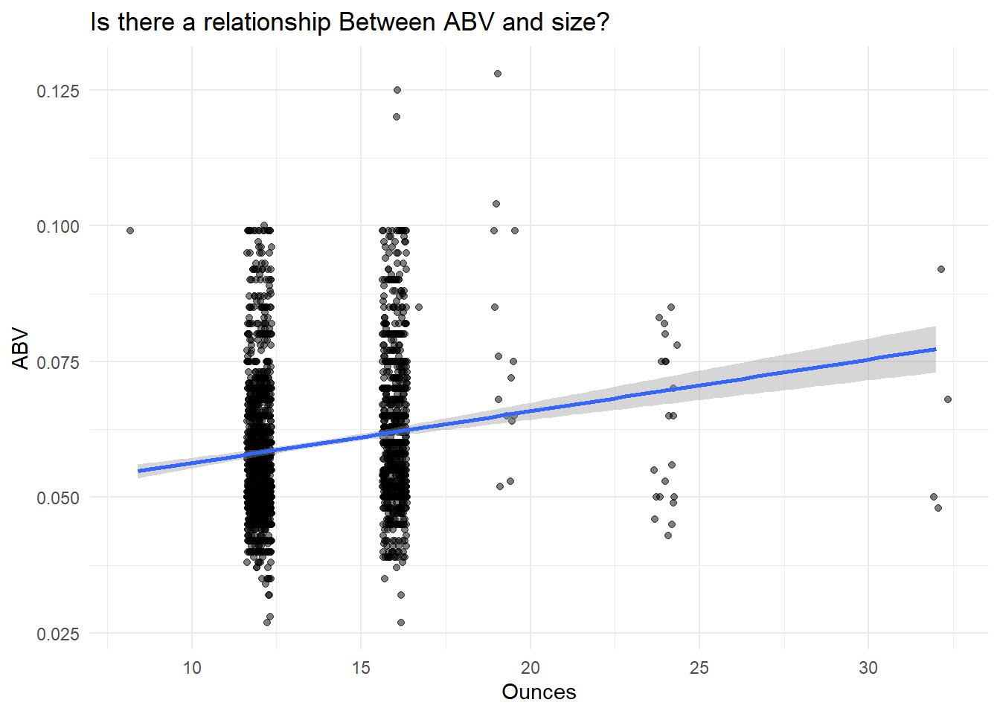
# All of the beer styles
beer_brew$style <- as.factor(beer_brew$style)
# Most popular styles
beer_brew %>%
count(style) %>%
rename(style_count = n) %>%
arrange(desc(style_count))## # A tibble: 90 x 2
## style style_count
## <fct> <int>
## 1 American IPA 424
## 2 American Pale Ale (APA) 245
## 3 American Amber / Red Ale 133
## 4 American Blonde Ale 108
## 5 American Double / Imperial IPA 105
## 6 American Pale Wheat Ale 97
## 7 American Brown Ale 70
## 8 American Porter 68
## 9 Saison / Farmhouse Ale 52
## 10 Witbier 51
## # ... with 80 more rows# Plot bar graph of styles - adapted from Kaggle code
beer_brew %>%
group_by(style) %>% # Group by the beer style
summarise(count = n()) %>% # Count per group
filter(count > 25) %>% # Only the larger groups
ggplot(aes(reorder(style, count), count)) + # Reorder the bars
geom_col(fill = '#C8102E') +
labs(
title = "Top Beer Styles in the US",
x = "Style",
y = "Count"
) +
theme_minimal() +
coord_flip()## `summarise()` ungrouping output (override with `.groups` argument)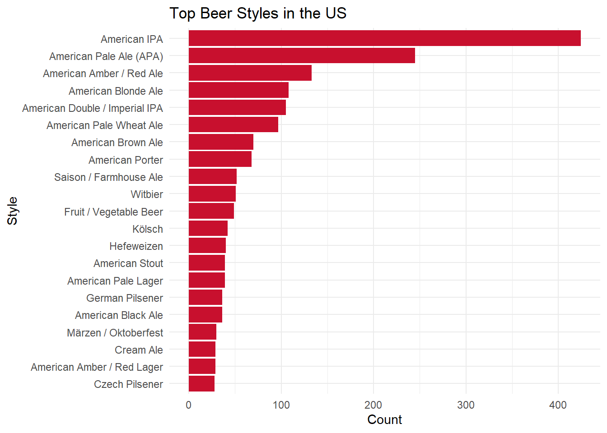
# What are the beers in Utah?
beer_brew %>%
filter(state == "UT")## # A tibble: 26 x 10
## beer_name beer_id abv ibu brewery_id style ounces brewery_name city state
## <chr> <dbl> <dbl> <dbl> <dbl> <fct> <dbl> <chr> <chr> <chr>
## 1 Bohemian Export ~ 1607 0.06 23.8 365 Dortmunder / Ex~ 12 Bohemian Brewery Midvale UT
## 2 Altus Bohemes Al~ 1597 0.053 34.1 365 Altbier 12 Bohemian Brewery Midvale UT
## 3 Cherny Bock 344 0.04 31 365 Schwarzbier 12 Bohemian Brewery Midvale UT
## 4 Czech Pilsner 89 0.05 33.8 365 Czech Pilsener 12 Bohemian Brewery Midvale UT
## 5 Viennese Lager 88 0.05 24.4 365 Vienna Lager 12 Bohemian Brewery Midvale UT
## 6 Squeaky Bike Nut~ 1476 0.04 29.9 400 American Brown ~ 16 Moab Brewery Moab UT
## 7 Dead Horse Amber 902 0.04 20.7 400 American Pale W~ 16 Moab Brewery Moab UT
## 8 Rocket Bike Amer~ 645 0.04 41 400 California Comm~ 16 Moab Brewery Moab UT
## 9 Johnny's America~ 644 0.04 67.6 400 American IPA 16 Moab Brewery Moab UT
## 10 PUNK'N 2310 0.05 10 160 Pumpkin Ale 12 Uinta Brewing C~ Salt Lak~ UT
## # ... with 16 more rows# 26 total beers, three cities: Midvale, Moab, SLC
# What are the beer styles in Utah?
beer_brew %>%
filter(state == "UT") %>%
count(style) %>%
rename(style_count = n) %>%
arrange(desc(style_count)) %>%
gt() %>%
tab_header(title = "Beer Styles in Utah")| Beer Styles in Utah | |
|---|---|
| style | style_count |
| American IPA | 4 |
| American Pale Ale (APA) | 4 |
| American Double / Imperial IPA | 2 |
| American White IPA | 2 |
| Schwarzbier | 2 |
| Altbier | 1 |
| American Amber / Red Lager | 1 |
| American Blonde Ale | 1 |
| American Brown Ale | 1 |
| American Pale Wheat Ale | 1 |
| California Common / Steam Beer | 1 |
| Czech Pilsener | 1 |
| Doppelbock | 1 |
| Dortmunder / Export Lager | 1 |
| Fruit / Vegetable Beer | 1 |
| Pumpkin Ale | 1 |
| Vienna Lager | 1 |
# What are the beers in the states with only one brewery (ND, SD, WV)
beer_brew %>%
filter(state == "ND" | state == "SD" | state == "WV")## # A tibble: 12 x 10
## beer_name beer_id abv ibu brewery_id style ounces brewery_name city state
## <chr> <dbl> <dbl> <dbl> <dbl> <fct> <dbl> <chr> <chr> <chr>
## 1 Red Water Irish ~ 2145 0.065 36.3 213 American Ambe~ 12 Crow Peak Brewing Co~ Spear~ SD
## 2 Mjöllnir 1804 0.066 22.2 213 Herbed / Spic~ 12 Crow Peak Brewing Co~ Spear~ SD
## 3 Bear Butte Nut B~ 1602 0.055 29.9 213 American Brow~ 12 Crow Peak Brewing Co~ Spear~ SD
## 4 Easy Livin' Summ~ 1301 0.045 21.0 213 American Blon~ 12 Crow Peak Brewing Co~ Spear~ SD
## 5 Canyon Cream Ale 542 0.055 20.3 213 Cream Ale 12 Crow Peak Brewing Co~ Spear~ SD
## 6 Pile O'Dirt Port~ 272 0.069 31.9 213 American Port~ 12 Crow Peak Brewing Co~ Spear~ SD
## 7 11th Hour IPA 271 0.06 67.6 213 American IPA 12 Crow Peak Brewing Co~ Spear~ SD
## 8 Iron Horse Pale ~ 1722 0.05 32 336 American Pale~ 12 Fargo Brewing Company Fargo ND
## 9 Stone's Throw IPA 1435 0.045 19 336 Scottish Ale 12 Fargo Brewing Company Fargo ND
## 10 Wood Chipper Ind~ 1434 0.067 70 336 American IPA 12 Fargo Brewing Company Fargo ND
## 11 Wild Trail Pale ~ 2314 0.057 44 157 American Pale~ 12 Greenbrier Valley Br~ Lewis~ WV
## 12 Mothman Black IPA 2313 0.067 71 157 American Blac~ 12 Greenbrier Valley Br~ Lewis~ WV# Average ABV by style
beer_brew %>%
group_by(style) %>%
summarize(
mean_abv = mean(abv) * 100,
count = n()
)## `summarise()` ungrouping output (override with `.groups` argument)## # A tibble: 90 x 3
## style mean_abv count
## <fct> <dbl> <int>
## 1 Abbey Single Ale 4.9 2
## 2 Altbier 5.44 13
## 3 American Adjunct Lager 4.87 18
## 4 American Amber / Red Ale 5.75 133
## 5 American Amber / Red Lager 4.95 29
## 6 American Barleywine 9.9 3
## 7 American Black Ale 6.90 36
## 8 American Blonde Ale 4.96 108
## 9 American Brown Ale 5.79 70
## 10 American Dark Wheat Ale 5.23 7
## # ... with 80 more rows# Highest ABV beer styles
beer_brew %>%
group_by(style) %>% # Group by the beer style
summarise(ABV = mean(abv)) %>% # mean abv by style
filter(ABV > 0.068) %>% # Only the larger groups
ggplot(aes(reorder(style, ABV), ABV)) + # Reorder the bars
geom_col(fill = '#C8102E') +
labs(
title = "Booziest Styles",
x = "Style",
y = "Mean ABV"
) +
theme_minimal() +
coord_flip()## `summarise()` ungrouping output (override with `.groups` argument)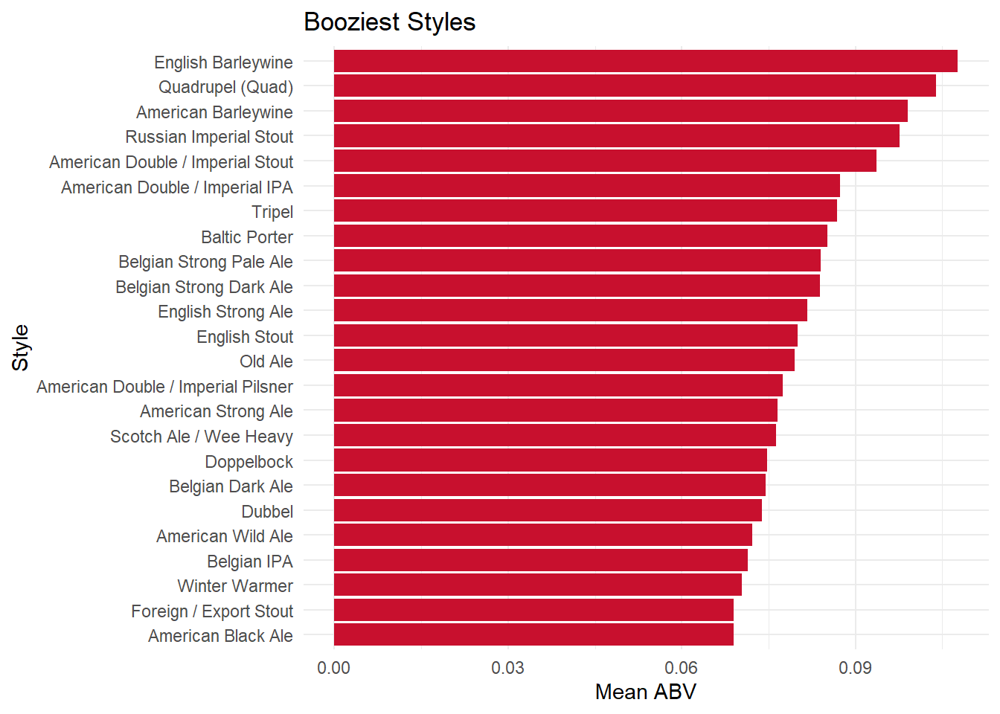
# Average IBU by style
beer_brew %>%
group_by(style) %>%
summarize(
mean_ibu = mean(ibu),
count = n()
)## `summarise()` ungrouping output (override with `.groups` argument)## # A tibble: 90 x 3
## style mean_ibu count
## <fct> <dbl> <int>
## 1 Abbey Single Ale 22 2
## 2 Altbier 34.1 13
## 3 American Adjunct Lager 11 18
## 4 American Amber / Red Ale 36.3 133
## 5 American Amber / Red Lager 23.2 29
## 6 American Barleywine 96 3
## 7 American Black Ale 68.9 36
## 8 American Blonde Ale 21.0 108
## 9 American Brown Ale 29.9 70
## 10 American Dark Wheat Ale 27.6 7
## # ... with 80 more rows# Highest IBU beer styles
beer_brew %>%
group_by(style) %>% # Group by the beer style
summarise(IBU = mean(ibu)) %>% # mean abv by style
filter(IBU > 55) %>% # Only the larger groups
ggplot(aes(reorder(style, IBU), IBU)) + # Reorder the bars
geom_col(fill = '#C8102E') +
labs(
title = "Most Bitter Styles",
x = "Style",
y = "Mean IBU"
) +
theme_minimal() +
coord_flip()## `summarise()` ungrouping output (override with `.groups` argument)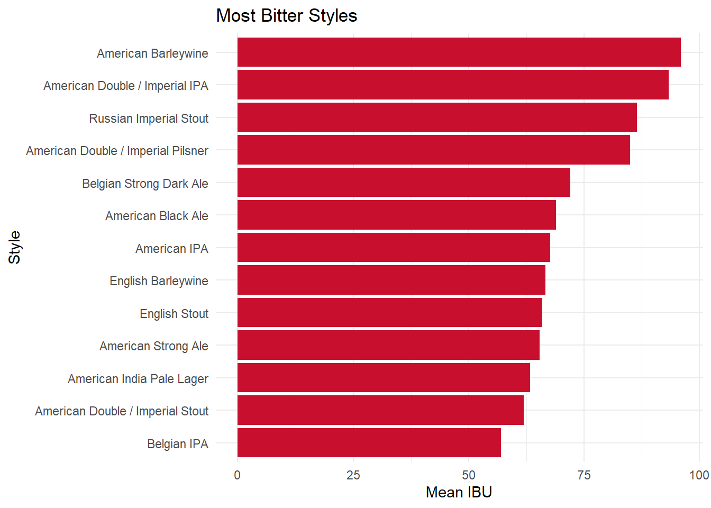
# American Barleywine is most bitter but also very high in ABU
# Which states have the fewest/smallest variety of styles
beer_brew %>%
group_by(state, style) %>%
summarize(count = n()) %>%
ungroup()## `summarise()` regrouping output by 'state' (override with `.groups` argument)## # A tibble: 967 x 3
## state style count
## <chr> <fct> <int>
## 1 AK Altbier 1
## 2 AK American Amber / Red Ale 2
## 3 AK American Blonde Ale 3
## 4 AK American Brown Ale 1
## 5 AK American IPA 7
## 6 AK American Pale Ale (APA) 2
## 7 AK Cream Ale 1
## 8 AK Czech Pilsener 1
## 9 AK English Pale Ale 1
## 10 AK Hefeweizen 1
## # ... with 957 more rows#Least common styles
beer_brew %>%
count(style) %>%
rename(style_count = n) %>%
arrange(style_count) %>%
slice_head(n = 15) %>%
gt() %>%
tab_header(title = "Least Popular Styles") %>%
cols_label(style = "Style",
style_count = "Count")| Least Popular Styles | |
|---|---|
| Style | Count |
| Flanders Oud Bruin | 1 |
| Grisette | 1 |
| Other | 1 |
| Smoked Beer | 1 |
| Wheat Ale | 1 |
| Abbey Single Ale | 2 |
| American Double / Imperial Pilsner | 2 |
| English Stout | 2 |
| Euro Pale Lager | 2 |
| Old Ale | 2 |
| Roggenbier | 2 |
| American Barleywine | 3 |
| American India Pale Lager | 3 |
| Chile Beer | 3 |
| English Barleywine | 3 |
Conclusion
We were able to find some interesting insights in the data based on location, IBU, and ABV. States on the coast and with major metropolitan areas tend to have more breweries and more beer variety. Utah is a state that could benefit from more variety for low alcohol content beers in particular, and Colorado is likely an already saturated market. For most of Middle America, there is an opportunity to increase distribution or even add new breweries to allow for more variety for consumers. We also suggested 15 different styles that have the least number of existing available beers that could be considered for new beers at Budweiser.